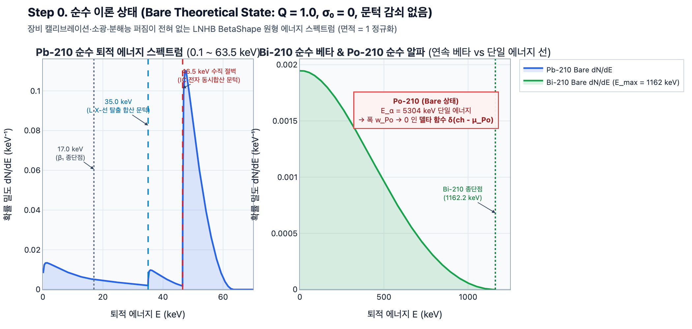
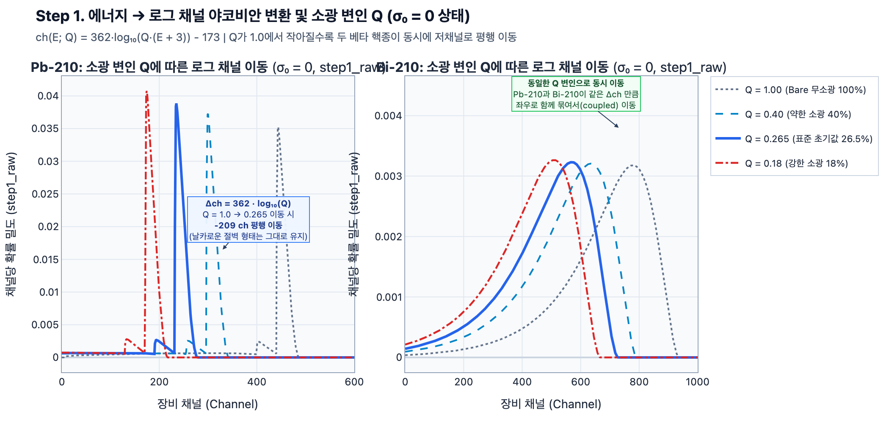
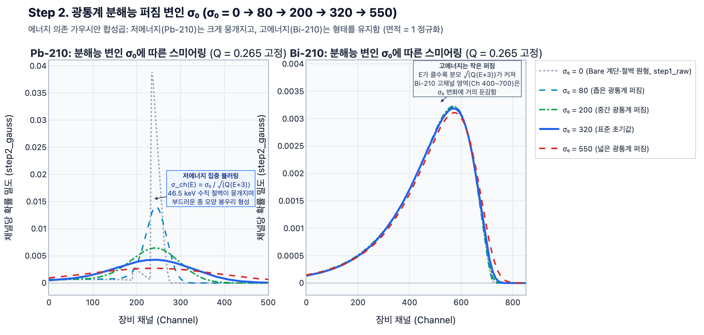
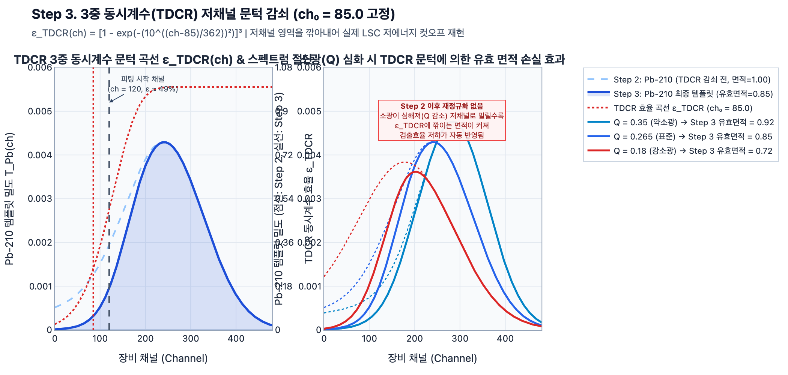
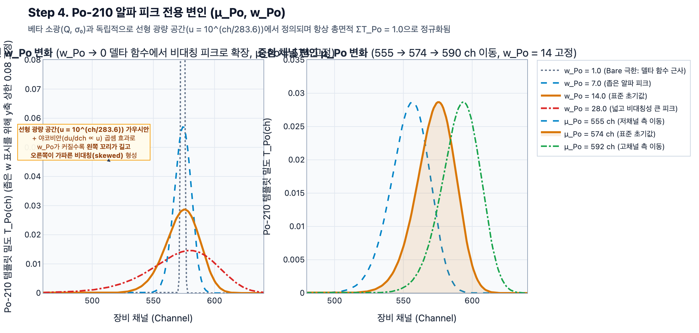
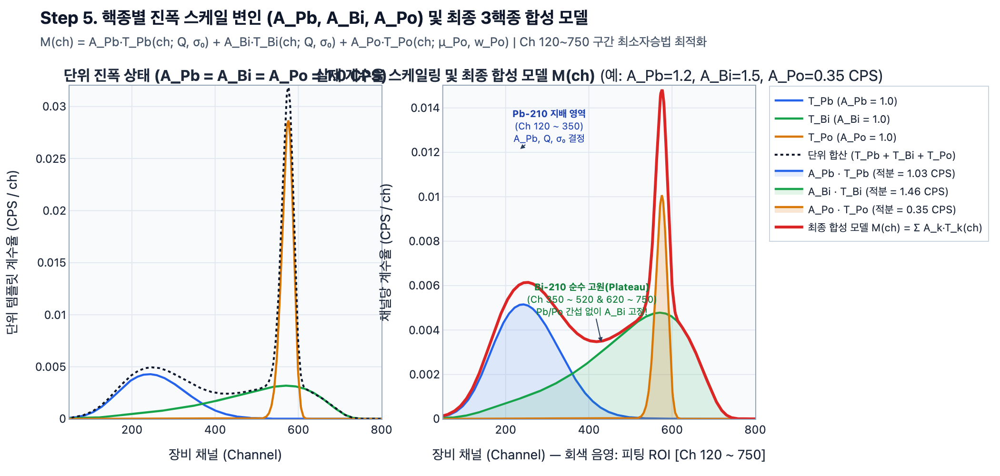

한눈에 보기 (Step 0 $\to$ Step 5 슬라이드)

스텝별 상세 그래프 및 물리적 의미
Step 0. 순수 이론 상태 (Bare State: $Q=1.0, \sigma_0=0, \varepsilon_{\text{TDCR}}=1, w_{\text{Po}} \to 0$)
STEP 0 · BARE STATE- 좌측 ($^{210}\text{Pb}$):
trans1($17.0\,\text{keV}$, $80.2\%$) 베타 전이 직후 나노초 이내에 방출되는 $46.539\,\text{keV}$ 내부전환전자(IC) 및 Auger/X선이 섬광액 내에서 동시합산(coincidence summing)되면서 $35.0\,\text{keV}$(L X-선 탈출 문턱) 와 $46.5\,\text{keV}$(완전 흡수 문턱) 에서 깎아지른 듯한 수직 절벽이 나타납니다. - 우측 ($^{210}\text{Bi}$ & $^{210}\text{Po}$): $^{210}\text{Bi}$는 $1162.2\,\text{keV}$까지 매끄럽게 이어지는 연속 베타 스펙트럼이며, $^{210}\text{Po}$는 폭이 $0$인 단일 에너지 델타 함수입니다.
Step 1. 에너지 $\to$ 로그 채널 매핑 및 소광 변인 $Q$ ($1.00 \to 0.40 \to 0.265 \to 0.18$)
STEP 1 · QUENCHING Q
$$\text{ch}(E; Q) = 362 \cdot \log_{10}\!\big(Q \cdot (E + 3.0)\big) - 173$$
- 분해능 퍼짐이 없는($\sigma_0 = 0$) 상태에서 로그 채널 축으로 야코비안($\frac{dE}{d\text{ch}} \propto E+3$) 변환만 수행한 결과(
step1_raw)입니다. - $Q$가 $1.00$에서 $0.265 \to 0.18$로 작아질수록 $\Delta\text{ch} = 362\log_{10}(Q)$만큼 $^{210}\text{Pb}$와 $^{210}\text{Bi}$ 두 스펙트럼이 동일한 채널 폭만큼 동시에 저채널(왼쪽)로 평행 이동합니다.
Step 2. 광통계 분해능 퍼짐 변인 $\sigma_0$ ($\sigma_0 = 0 \to 80 \to 200 \to 320 \to 550$)
STEP 2 · RESOLUTION σ₀
$$\sigma_{\text{ch}}(E; Q, \sigma_0) = \max\!\left(\frac{\sigma_0}{\sqrt{Q \cdot (E + 3.0)}},\; 1.0\right)$$
- 좌측 ($^{210}\text{Pb}$): 저에너지 영역이므로 분모 $\sqrt{Q(E+3)}$가 작아 $\sigma_{\text{ch}}$가 매우 큽니다($\sigma_0=320$일 때 약 $85\,\text{ch}$). 따라서 $\sigma_0$가 커질수록 Step 1의 날카로운 $46.5\,\text{keV}$ 절벽이 양옆으로 뭉개지면서 부드러운 종 모양 피크(
step2_gauss)로 변합니다. - 우측 ($^{210}\text{Bi}$): 고에너지 영역($\text{ch } 400 \sim 700$)에서는 분모 $\sqrt{Q(E+3)}$가 커서 $\sigma_{\text{ch}}$가 작기 때문에, $\sigma_0$가 $80$에서 $550$으로 변해도 고원(plateau) 형태는 거의 그대로 유지됩니다.
Step 3. 3중 동시계수(TDCR) 저채널 문턱 감쇠 ($\text{ch}_0 = 85.0$ 고정)
STEP 3 · TDCR CUTOFF
$$\varepsilon_{\text{TDCR}}(\text{ch}) = \left(1 - \exp\!\left[-\left(10^{(\text{ch} - 85.0)/362}\right)^2\right]\right)^3$$
- 좌측: 붉은 점선($\varepsilon_{\text{TDCR}}$)이 Step 2 스펙트럼(하늘색 파선, 면적 $= 1.00$)에 곱해지면서 $\text{ch } 150$ 이하의 저채널 꼬리를 깎아내어 최종 템플릿(진한 파란 실선, 유효 면적 $= 0.85$)을 만듭니다.
- 우측: Step 2에서만 면적을 $1.0$으로 정규화하고 Step 3 이후에는 재정규화하지 않기 때문에, 소광이 강해져($Q = 0.35 \to 0.265 \to 0.18$) 스펙트럼이 왼쪽으로 밀릴수록 $\varepsilon_{\text{TDCR}}$ 문턱에 깎여 나가는 면적이 커집니다(유효 면적 $0.91 \to 0.85 \to 0.72$).
Step 4. $^{210}\text{Po}$ 알파 피크 전용 변인 ($\mu_{\text{Po}}, w_{\text{Po}}$)
STEP 4 · Po-210 ALPHA
- 좌측 ($w_{\text{Po}}$ 변화): $w_{\text{Po}} = 1.0$(델타 함수 근사)에서 $7 \to 14 \to 28$로 커질수록 선형 광량 공간($u = 10^{\text{ch}/283.6}$)의 가우시안이 로그 채널 공간으로 투영되면서 야코비안($du/d\text{ch} \propto u$)과 결합해 왼쪽 꼬리가 완만하고 오른쪽이 가파른 비대칭(skewed) 알파 피크가 됩니다.
- 우측 ($\mu_{\text{Po}}$ 변화): $\mu_{\text{Po}}$가 $555 \to 574 \to 592\,\text{ch}$로 변하면 알파 피크의 중심 위치가 이동하며, 전체 면적은 항상 $1.0$으로 유지됩니다.
Step 5. 진폭 스케일 변인 ($A_{\text{Pb}}, A_{\text{Bi}}, A_{\text{Po}}$) 및 최종 3핵종 합성 모델
STEP 5 · FINAL SYNTHESIS
- 좌측: $A_{\text{Pb}} = A_{\text{Bi}} = A_{\text{Po}} = 1.0\,\text{CPS}$인 단위 템플릿 상태입니다.
- 우측: 실제 계수율($A_{\text{Pb}}=1.20, A_{\text{Bi}}=1.50, A_{\text{Po}}=0.35\,\text{CPS}$)이 곱해진 뒤 합산된 최종 모델 $M(\text{ch})$(붉은 실선)입니다.
- $\text{Ch } 350 \sim 520$ 및 $620 \sim 750$: $^{210}\text{Pb}$와 $^{210}\text{Po}$가 모두 $0$인 $^{210}\text{Bi}$ 단독 고원(Plateau) 구간이 존재하여 $A_{\text{Bi}}$가 간섭 없이 먼저 단단히 고정(anchor)됩니다.
- 그 위($\text{Ch } 520 \sim 620$)에 얹힌 알파 피크로부터 $A_{\text{Po}}, \mu_{\text{Po}}, w_{\text{Po}}$가 분리되고, 저채널($\text{Ch } 120 \sim 350$)에서 $^{210}\text{Bi}$ 기여분을 뺀 나머지로부터 $A_{\text{Pb}}, Q, \sigma_0$가 결정됩니다.